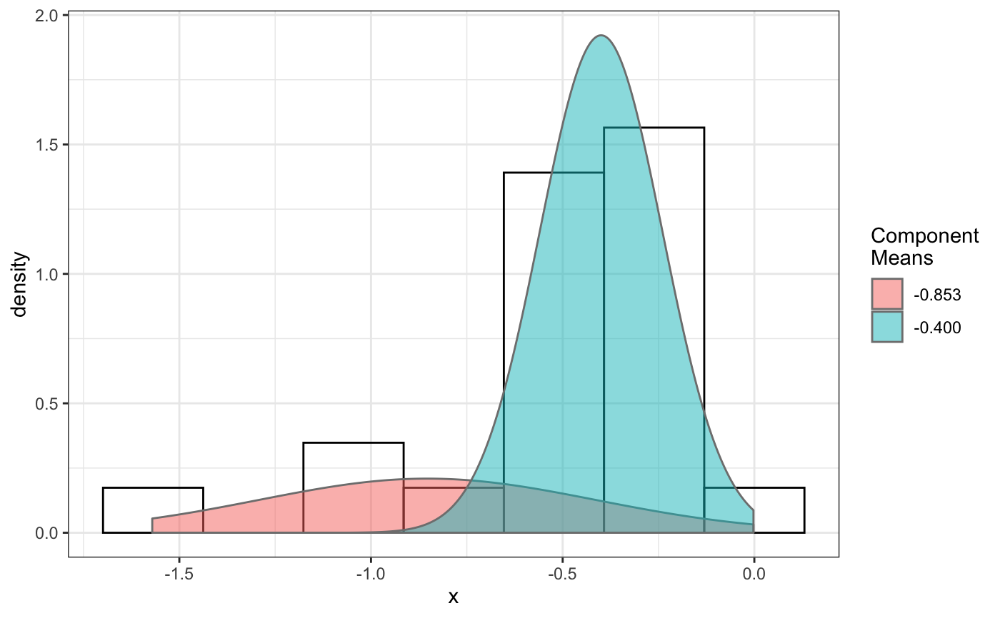
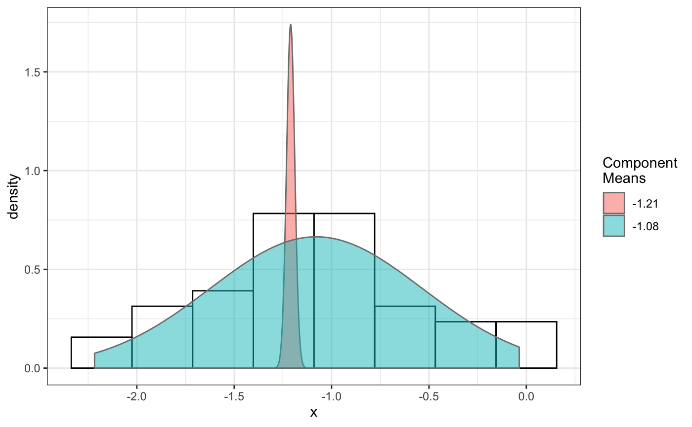
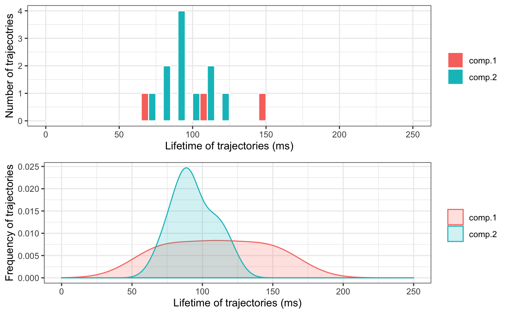
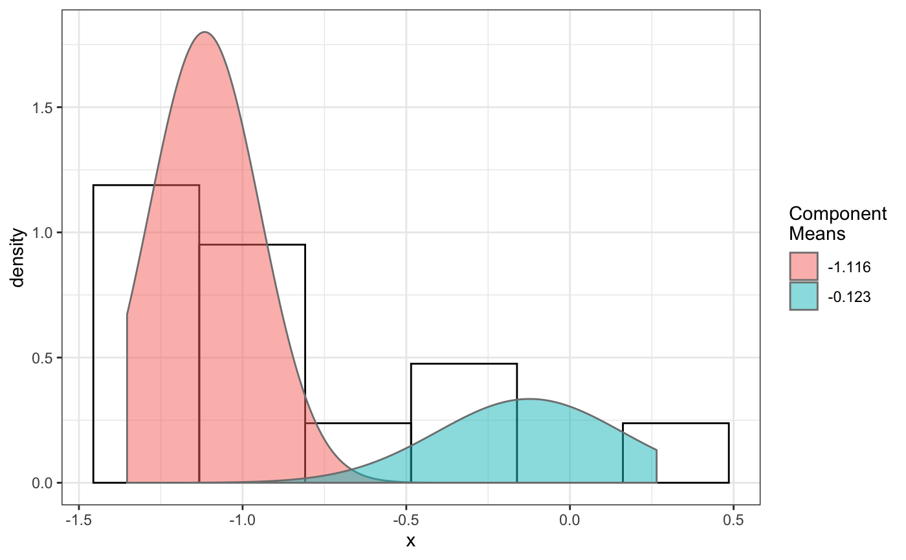
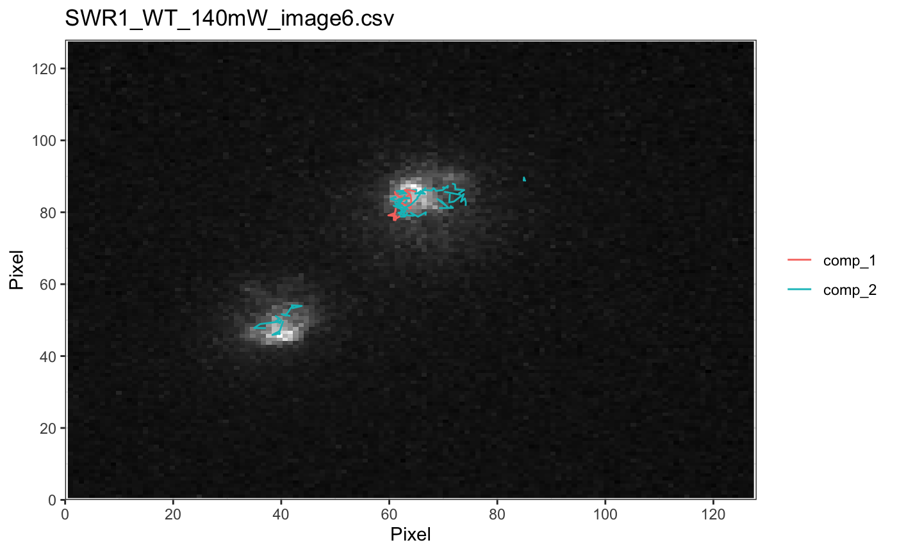

Select trajectory based on component fitting on diffusion coefficient.
selComponentTracks(trackll,fit,likelihood=0.9,dcoef, log.transformed=FALSE,output=FALSE)
Arguments
| trackll | a list of track lists. |
|---|---|
| fit | Component fitting result form fitNormDistr() function. |
| likelihood | The likelihood of a trajecotry to be in fitted group. This parameter specifies the strigency of selecting trajectories to be in the fitted group and therefore influence the number of trajectories been selected. |
| dcoef | Diffusion coefficent calcualted by Dcoef, which provide the link between trajecotry index and diffusion coefficent. |
| log.transformed | A flag indicating if the fitting is been log transformed, select TRUE if fitting was done in fitNormDistr (log.transform = TRUE,..). This parameter will be removed in later version by directly read the info from the output of fitNormalDistr() function. |
| output | A logical indicating if output of selected trajectory index, which can be used for plot individual trajectory using plotTrack. |
Value
combined list of trackll The result is a combined list of selected trajectories. The list is one level higher than trackll, use subsetting to output trackll.e.g. trackll[[1]], or trackll[['SWR1']].
Examples
## selComponentTracks() usage # 1. select componentTracks per folder (cross movie) using compareFolders # 2. select componentTracks per movie base, use plotComponentTracks to plot # component tracks back to initial Nuclei image. ## 1. select componentTracks per folder (cross movie) by using ## compareFolders folder1=system.file('extdata','SWR1',package='sojourner') folder2=system.file('extdata','HTZ1',package='sojourner') trackll=compareFolder(folders=c(folder1,folder2), input=3)#> #> Reading ParticleTracker file: SWR1_WT_140mW_image6.csv ... #> #> mage6 read and processed. #> #> Process complete. #> #> Merging of folder SWR1 complete. #> #> ... #> #> Reading ParticleTracker file: HTZ1_140mW_WT.csv ... #> #> mW_WT read and processed. #> #> Process complete. #> #> Merging of folder HTZ1 complete. #> #> ...#> applying filter, min 7 max Inf #> 45 tracks length > & = 1 45 tracks length > & = 2 45 tracks length > & = 3 45 tracks length > & = 4 45 tracks length > & = 5 45 tracks length > & = 6 #> #> ... #> 122 tracks length > & = 1 122 tracks length > & = 2 122 tracks length > & = 3 122 tracks length > & = 4 122 tracks length > & = 5 122 tracks length > & = 6 #> #> ...#> #> applying static,lag.start= 2 lag.end= 5 #> lag.start 2 lag.end 5 #> #> Applying r square filter... 0.8#> Warning: NaNs produced# fit dcoef # for replication purpose set seed to fix number set.seed(484) fit=fitNormDistr(dcoef,components=2,log.transform=TRUE,combine.plot=FALSE, output=FALSE)#> #> IMPORTANT: Ensure a seed has been manually set! See help docs for more info.#> Warning: NaNs produced#> number of iterations= 114 #> summary of normalmixEM object: #> comp 1 comp 2 #> lambda 0.230280 0.769720 #> mu -0.853133 -0.399750 #> sigma 0.439276 0.159796 #> loglik at estimate: -1.451852 #> NULL #> auto binwidth = 0.2613932 #> #> approximating standard error by parametic bootstrap... #>#> number of iterations= 110 #> summary of normalmixEM object: #> comp 1 comp 2 #> lambda 0.0919671 0.908033 #> mu -1.2100952 -1.079006 #> sigma 0.0210714 0.544906 #> loglik at estimate: -29.42532 #> NULL #> auto binwidth = 0.3115359 #> #> approximating standard error by parametic bootstrap... #>#> $SWR1 #> [,1] [,2] #> proportion 0.2302801 0.7697199 #> mean -0.8531325 -0.3997502 #> sd 0.4392758 0.1597964 #> log.lik -1.4518518 -1.4518518 #> #> $HTZ1 #> [,1] [,2] #> proportion 0.09196705 0.9080329 #> mean -1.21009523 -1.0790064 #> sd 0.02107145 0.5449065 #> log.lik -29.42532066 -29.4253207 #># select component tracks from fitting trackll.sel=selComponentTracks(trackll=trackll,fit=fit,likelihood=0.9, dcoef=dcoef,log.transformed=TRUE,output=FALSE)#> #> at likelihood of 0.9 , the number of trajectories selected are: #> comp.1 comp.2 #> SWR1 3 12 #> HTZ1 0 34# subset component tracks to further analyze msd, dcoef trackll.swr1=trackll.sel[['SWR1']] msd(trackll.swr1,plot=FALSE)#> applying filter, min 7 max Inf #> 3 tracks length > & = 1 3 tracks length > & = 2 3 tracks length > & = 3 3 tracks length > & = 4 3 tracks length > & = 5 3 tracks length > & = 6 #> #> ... #> 12 tracks length > & = 1 12 tracks length > & = 2 12 tracks length > & = 3 12 tracks length > & = 4 12 tracks length > & = 5 12 tracks length > & = 6 #> #> ...#> applying filter, min 7 max Inf #> 3 tracks length > & = 1 3 tracks length > & = 2 3 tracks length > & = 3 3 tracks length > & = 4 3 tracks length > & = 5 3 tracks length > & = 6 #> #> ... #> 12 tracks length > & = 1 12 tracks length > & = 2 12 tracks length > & = 3 12 tracks length > & = 4 12 tracks length > & = 5 12 tracks length > & = 6 #> #> ...#> #> applying static,lag.start= 2 lag.end= 5 #> applying filter, min 7 max Inf #> 3 tracks length > & = 1 3 tracks length > & = 2 3 tracks length > & = 3 3 tracks length > & = 4 3 tracks length > & = 5 3 tracks length > & = 6 #> #> ... #> 12 tracks length > & = 1 12 tracks length > & = 2 12 tracks length > & = 3 12 tracks length > & = 4 12 tracks length > & = 5 12 tracks length > & = 6 #> #> ... #> lag.start 2 lag.end 5 #> #> Applying r square filter... 0.8plotTrackOverlay(trackll.swr1)#> #> Processing comp.1 #> Processing comp.2 #> Output combined plot...#> #> Done!#> Warning: Removed 1 rows containing non-finite values (stat_bin).#> Warning: Removed 2 rows containing missing values (geom_bar).#> Warning: Removed 1 rows containing non-finite values (stat_density).# Output trajectory index to plot individually trackll.sel=selComponentTracks(trackll=trackll,fit=fit,likelihood = 0.9, dcoef = dcoef,log.transformed=TRUE, output=FALSE)#> #> at likelihood of 0.9 , the number of trajectories selected are: #> comp.1 comp.2 #> SWR1 3 12 #> HTZ1 0 34# specify index file path. index.file=system.file('extdata','INDEX', 'componentTrackID-SWR1.comp.1.csv', package='sojourner') index.file2=system.file('extdata','INDEX', 'componentTrackID-SWR1.comp.2.csv', package='sojourner') movie.folder=system.file('extdata','SWR1_2',package='sojourner') plotTrackFromIndex(index.file=index.file,movie.folder = movie.folder, input = 3)#> #> Reading ParticleTracker file: SWR1_WT_140mW_image6.csv ... #> #> Converting to ab.trackl for plotting #> #> mage6 read and processed. #> #> Reading ParticleTracker file: SWR1_WT_140mW_image7.csv ... #> #> Converting to ab.trackl for plotting #> #> mage7 read and processed. #> #> Process complete. #> #> Merging of folder SWR1_2 complete. #> #> ... #> #> Output track plot...#> #> Output csv file for track plot...#> #> Reading ParticleTracker file: SWR1_WT_140mW_image6.csv ... #> #> Converting to ab.trackl for plotting #> #> mage6 read and processed. #> #> Reading ParticleTracker file: SWR1_WT_140mW_image7.csv ... #> #> Converting to ab.trackl for plotting #> #> mage7 read and processed. #> #> Process complete. #> #> Merging of folder SWR1_2 complete. #> #> ... #> #> Output track plot...#> #> Output csv file for track plot...## 2. select componentTracks per movie base, use plotComponentTracks to ##plot component tracks back to initial Nuclei image. ## plotComponentTrackOverlay folder3=system.file('extdata','SWR1_2',package='sojourner') trackll=createTrackll(folder=folder3, input=3)#> #> Reading ParticleTracker file: SWR1_WT_140mW_image6.csv ... #> #> mage6 read and processed. #> #> Reading ParticleTracker file: SWR1_WT_140mW_image7.csv ... #> #> mage7 read and processed. #> #> Process complete.## use merge=TRUE for per folder comparison, ## the analsyis result can't be plot back to original image ## To see component tracks on original nuclei image, set merge=FALSE (for ## per movie analysis) ## may not make much sense to msd on individual movie, ##however for plot component track back to original nuclei image. ## compute MSD MSD=msd(trackll=trackll,plot=FALSE)#> applying filter, min 7 max Inf #> 45 tracks length > & = 1 45 tracks length > & = 2 45 tracks length > & = 3 45 tracks length > & = 4 45 tracks length > & = 5 45 tracks length > & = 6 #> #> ... #> 32 tracks length > & = 1 32 tracks length > & = 2 32 tracks length > & = 3 32 tracks length > & = 4 32 tracks length > & = 5 32 tracks length > & = 6 #> #> ...#> applying filter, min 7 max Inf #> 45 tracks length > & = 1 45 tracks length > & = 2 45 tracks length > & = 3 45 tracks length > & = 4 45 tracks length > & = 5 45 tracks length > & = 6 #> #> ... #> 32 tracks length > & = 1 32 tracks length > & = 2 32 tracks length > & = 3 32 tracks length > & = 4 32 tracks length > & = 5 32 tracks length > & = 6 #> #> ...#> #> applying static,lag.start= 2 lag.end= 5 #> lag.start 2 lag.end 5 #> #> Applying r square filter... 0.8#> Warning: NaNs produced## fit normal distribution to define component ## set seed to reproduce results (see fitNormalDistr() for details on seed) set.seed(484) fit=fitNormDistr(dcoef,components=2,log.transform=TRUE,combine.plot=FALSE, output=FALSE)#> #> IMPORTANT: Ensure a seed has been manually set! See help docs for more info.#> Warning: NaNs produced#> number of iterations= 114 #> summary of normalmixEM object: #> comp 1 comp 2 #> lambda 0.230280 0.769720 #> mu -0.853133 -0.399750 #> sigma 0.439276 0.159796 #> loglik at estimate: -1.451852 #> NULL #> auto binwidth = 0.2613932 #> #> approximating standard error by parametic bootstrap... #>#> number of iterations= 38 #> summary of normalmixEM object: #> comp 1 comp 2 #> lambda 0.762453 0.237547 #> mu -1.115761 -0.123334 #> sigma 0.168953 0.283096 #> loglik at estimate: -3.694853 #> NULL #> auto binwidth = 0.3235475 #> #> approximating standard error by parametic bootstrap... #>#> $SWR1_WT_140mW_image6.csv #> [,1] [,2] #> proportion 0.2302801 0.7697199 #> mean -0.8531325 -0.3997502 #> sd 0.4392758 0.1597964 #> log.lik -1.4518518 -1.4518518 #> #> $SWR1_WT_140mW_image7.csv #> [,1] [,2] #> proportion 0.7624533 0.2375467 #> mean -1.1157610 -0.1233340 #> sd 0.1689532 0.2830960 #> log.lik -3.6948531 -3.6948531 #>## select component tracks based on fitting trackll.sel=selComponentTracks(trackll=trackll,fit=fit,likelihood = 0.9, dcoef)#> #> at likelihood of 0.9 , the number of trajectories selected are: #> comp.1 comp.2 #> SWR1_WT_140mW_image6.csv 3 12 #> SWR1_WT_140mW_image7.csv 10 3#> #> Processing SWR1_WT_140mW_image6.csv #> Processing SWR1_WT_140mW_image7.csv #> Processing SWR1_WT_140mW_image6.csv#> #> Processing SWR1_WT_140mW_image7.csv#> #> Output combined plot...#> #> Done!